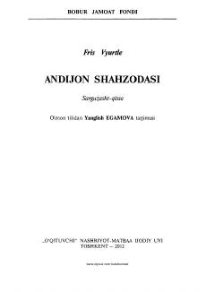

ASZahiriddin Muhammad Boburning yoshlik davri va taxtga o‘tirishi haqidagi sarguzasht qissa.
Ushbu sarguzasht-qissa Zahiriddin Muhammad Boburning 12 yoshida Farg‘ona taxtiga o‘tirgan davridagi hayoti va janglarini tasvirlaydi. Asar avstriyalik yozuvchi Fris Vyurtlening „Boburnoma“ asaridan ta’sirlanib yozilgan „Bobur — yo‘lbars“ kitobi asosida o‘zbek tiliga tarjima qilingan.